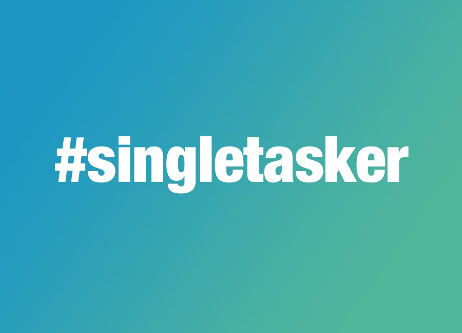
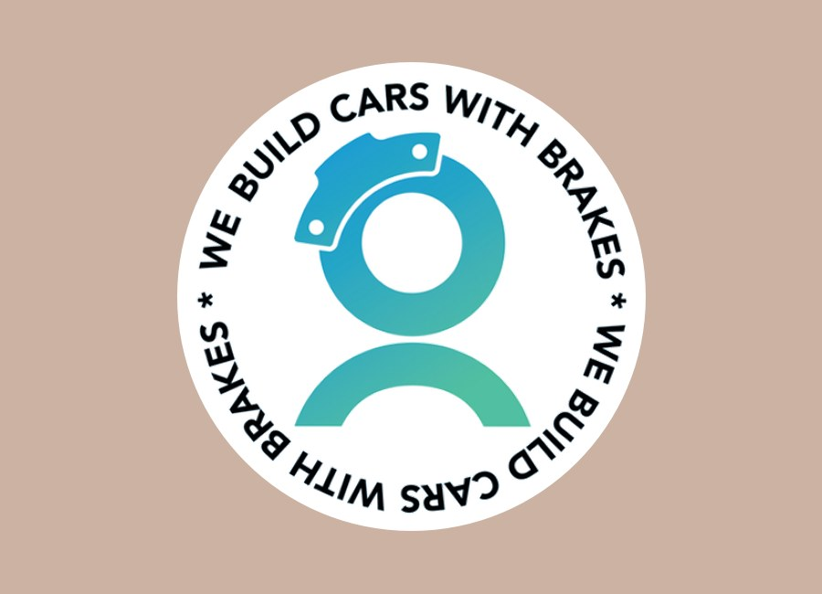
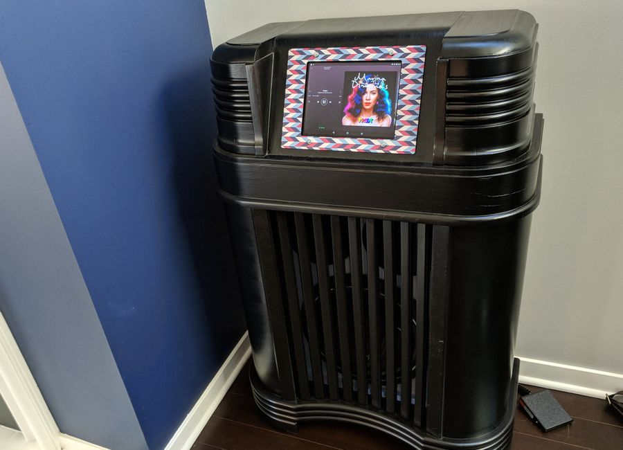
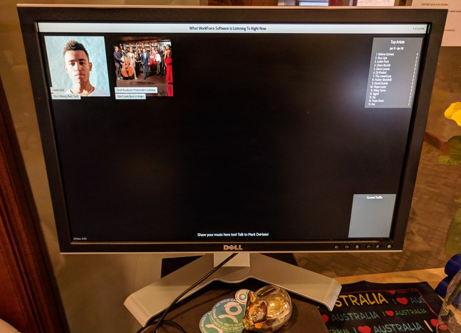
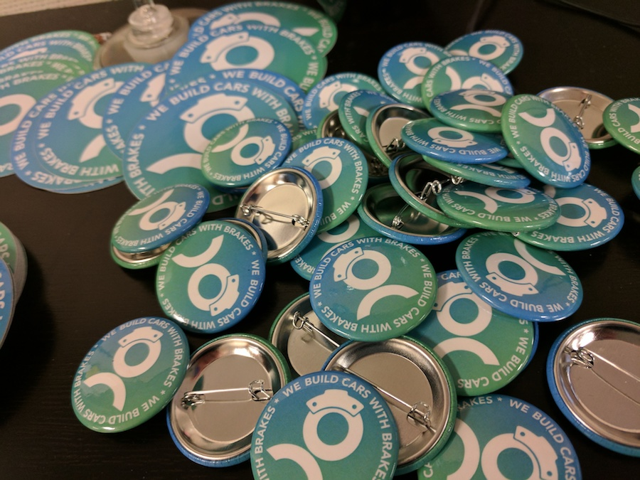

Mark DeHateProduct Owner - UX Designer - Problem Solver
My Projects
My professional career thus far is full of b2b employers, so as a result, I'm unable to disclose most of my day-to-day work on a public website. So here are a few interesting things that I can show you, more around my hobbies and how I spend my free time.




My Career Journey
Hi! I'm Mark DeHate - currently I work as a Product Owner. Each of my past careers (even as a DJ, though not represented here!) has provided me invaluable experience on the way. All in all I get immense satisfaction out of helping other people do amazing things, and my career journey so far highlights that as a common thread.
Sysadmin/Developer
My professional career started as a "full-stack" system administrator and computer technician, managing a Mac OS X Server and countless desktops and laptops at a K-12 school district. Later I moved on as a true developer - first on the back end, working on COBOL and Java, and gradually working towards the front end, JavaScript, HTML, and CSS.
In addition to a deep appreciation of well-organized network racks, the main takeaway I have from this experience is how technology serves people, and not the other way around.
UX Designer
My front-end development experience led me to a decade of work as a UX Designer, all in the enterprise space. Most of my time as a designer has been with a small supporting team, so I've had the opportunity to experience the whole gamut of UX - from product discovery to usability studies to high fidelity mockups. The enterprise space has a ton of really crunchy problems to gnaw on that are super satisfying to take on.
As a UX Designer (particularly in the enterprise), I've learned a lot about balancing business and user needs, and the role of UX being a facilitator to get the whole team on the same page.
Product Owner
As a UX Designer, I loved the ability to remove barriers for other people's success. I get the same feeling as a Product Owner in an Agile team, just with way more immediate results! This role has me diving into understanding users in a similar way as a UX Designer, but adding in a slightly different spin when thinking about priorities for the product, and the business.
As my career has moved into the Product space, I've really honed my skills at focusing what's critical - for the user AND the business - and what's just noise.
Contact Me
That Game's UX
That Game's UX is a blog about usability and user experience in gaming ("Because Gamers are Users Too!"). I love all forms of gaming, so I started writing this blog to have a valid excuse to game more and call it work :). It's...let's say "less active" these days, but I do value the experience that this was, and still get inspired to write an article from time to time.
This experience was (and is!) a great chance to practice my writing, about a topic I love. I also administer the server myself, so I've learned a lot about proper(-ish) Wordpress, Linux, and Apache server adminstration. And how to deal with spam! So much spam.
One of my personal goals is to multitask less. To help motivate me (and because it sounded like fun), I made up some small #singletasker stickers. It's been a hit with lots of people that I've shared them with (turns out you can't easily buy a handful of custom stickers!), and I'm thinking about bigger plans for this. It's a movement that will be sweeping the globe!!!
Projects like these I tend to learn a lot about the Adobe Creative Suite. Having a more technical background - not so much graphic design - I'm still fairly low on the Adobe suite learning curve. But I'm moving up! I also am a sucker for a good hashtag, so I couldn't let this idea go un-finished :)
This was a guerrilla internal marketing campaign that I started. At a department-wide meeting, my Vice President at the time was using this analogy to encourage everyone to push back against changes that would end up being detrimental to the company or the users (or both). If you were building a car, and someone told you to leave off the brakes, you wouldn't do it right?
And so, I was inspired to build this design based on the WorkForce Software logo. It eventually made its way onto buttons and stickers, many laptops are still adorned with it, and we may have gotten it framed once or twice!

Date:
Spring 2017
Radio Upgrade
I've always wanted a jukebox. Not really for the magic of getting CDs or vinyl played by a mechanical arm, but I love the idea of music having a physical home in the house. So I ran across an old Philco 1940's era radio in a Salvation Army once, and I couldn't resist the chance to give it a new life.
I disassembled this radio, then stripped, sanded, and stained it black. I also have a soft spot for car audio (even better when it's not in my car to be honest), so I built a box for the subwoofer, attached a car audio amplifier, and two speakers. It's obnoxiously loud, which is ideal :)
The tube-filled radio, also gone, replaced with a tablet running Spotify, and a Chromecast Audio so I can bump my jams from any room in the house! It works quite well! The frame surrounding the tablet is a laser-cut piece of MDF from Ponoko.com (a site that I wholeheartedly recommend for your laser-cutting needs!)
I've got photos of the whole process, and am working to better document the effort. Stay tuned!
I love projects like this for so many reasons. Obviously, I ended up with this amazing piece in my living room, which is great. But I learned so much along the way - from how to (safely!) power a car amplifier with AC power, to designing and making a laser-cut frame, to what nasty chemicals to use to strip 70+ year old veneers, and of course how to dispose of said nasty chemicals. Each step of the process is a new challenge, and it's extremely satisfying!
Date:
Summer 2017
What's Playing?
Sometimes I have weird thoughts while walking around the office. One of those persistent ones is: if everybody in the office collectively had a radio station filled with what they are listening to right now, what would it sound like?
So I set out to make the tunes we're bumping at our desks a little more social. I wrote a little JavaScript-based app to query last.fm, a website that allows users to track their listening habits across a whole range of devices. My script pulls down album art for anything that is marked as 'now playing'.
I have this running on a Raspberry Pi hooked up to a spare monitor in a central location - so as you're walking around the office, you can see at a glance what people are listening to at the current moment! I would say it turns into a game of "who's listening to Carly Rae Jepsen again", but at this point everybody knows it's probably me :)
This project gives me a chance to dive into JavaScript every once in a while. I miss web development occasionally, and this lets me scratch my itch in a manageable, non-destructive way. It's also been a great introduction to source control, and it's helped me learn a lot about how Git works (among other dev tooling items).
And of course, I do find it endlessly fascinating what music others are listening to, and have found a few new bands by randomly walking by the monitor!
Date:
Summer 2015 - now
Link:
The source code is currently not hosted publicly, but I'm working on that!
Project Title
Use this area of the page to describe your project. The icon above is part of a free icon set by Flat Icons. On their website, you can download their free set with 16 icons, or you can purchase the entire set with 146 icons for only $12!